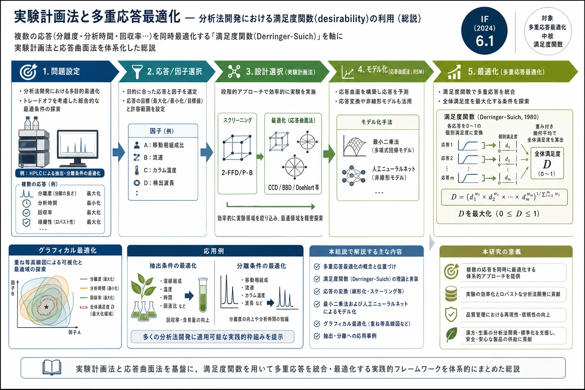

実験計画法と多重応答最適化 — 分析法開発における満足度関数(desirability)の利用（総説）

<!-- 方針: 全訳＋必要に応じた補足。原文構成に沿って全節を訳出。式番号・図表番号は原文準拠。「> 補足:」は訳者注。 -->
書誌情報
- 原題: Experimental design and multiple response optimization. Using the desirability function in analytical methods development
- 著者: Luciana Vera Candioti, María M. De Zan, María S. Cámara, Héctor C. Goicoechea（リトラル国立大学 分析開発・ケモメトリクス研究室(LADAQ)／医薬品品質管理研究室(LCCM)／CONICET, アルゼンチン）
- 掲載: Talanta 124 (2014) 123–138. https://doi.org/10.1016/j.talanta.2014.01.034（総説, Review）
- キーワード: Experimental design（実験計画）/ Response transformation（応答変換）/ Multiple response optimization（多重応答最適化）/ Desirability function（満足度関数）
- インパクトファクター: 6.1（Talanta, JCR 2024 / Clarivate）
- 受理経過: 受領 2013-11-06 / 改訂 2014-01-21 / 採録 2014-01-23 / オンライン公開 2014-02-12
補足: 本論文は、分析法開発で複数の目標(応答)を同時に最良にするための方法論レビュー。中核は 満足度関数(desirability function)——「分離度は高く、分析時間は短く、回収率は100%に、…」といった相反しがちな複数目標を、各々0〜1の点数に直して1つの総合点(D)にまとめ、それを最大化する手法。用語: RSM=応答曲面法、DoE=実験計画法、FFD=完全実施要因計画、FrFD=一部実施要因計画、P-B=Plackett-Burman、CCD=中心複合計画、BBD=Box-Behnken計画、ANN=人工ニューラルネット、$\hat{y}$=モデルの予測応答。本サイト収録のDoE総説・AQbD総説・保持モデリング総説・CRF比較と同じ「メソッド開発の道具」系列。
要旨（Abstract）
分析法開発の分野で、複数の応答を同時に最適化しなければならない場合の応答曲面法(RSM)の適用についてレビューする。応答変換(response transformation)、多重応答最適化(multiple response optimization)、最小二乗(least squares)および人工ニューラルネット(ANN)によるモデル化といった、いくつかの重要な論点を論じる。最新の分析応用例を、分析法開発の——とりわけ満足度関数を用いた多重応答最適化手続きの——文脈で提示する。
1. 序論（Introduction）
規制当局の品質要求の高まり、試薬の高コスト、そして分析プロセスに影響する変数の多さのため、分析法の開発・バリデーションは単純な作業とは見なせない。この文脈で「最適化(optimization)」という語は、分析プロセスの性能を改善すること——すなわち最良の応答が得られる条件を見つけ出すことを指す。分析化学において最適化は、各因子が最良の応答を生むためにとるべき値を見つける決定的段階であり、ラボで開発中の・公定法や標準法を改変した・文献から得た分析法のいずれについても、良好な性能を保証しながら行わねばならない。
この文脈で、多変量の実験計画(DOE) は重要な論点である。というのも、1因子ずつ変える一変量手法（驚くべきことに日常のメソッド開発でいまだに使われている)より、時間・労力・資源が少なくて済み、実験数を最小化しつつ大量の情報を集められるからである。DOEと応答曲面法(RSM)は、プロセスの開発・改善・最適化に有用であることが実証されており、分析応用のほか、産業界やバイオプロセスの分野でも広く用いられてきた。
原文の Fig.1 のフローチャートが示すように、DOEとRSMは主として分析分離と抽出手順に適用される。最初のスクリーニング研究の後、応答曲面設計を構築してデータを得、それを一般には最小二乗当てはめで（例外的には人工ニューラルネットで)モデル化する。多数の応答を（適切な基準に従って)最適化する必要がある場合、満足度関数が最も普及した道具である。
本総説では、分析法の最適化段階におけるDOEの役割を分析し、これまでの総説で十分に扱われてこなかった論点——特に応答変換と多重応答最適化——を重点的に論じる。最後に、満足度関数を用いた多重応答最適化手続きを中心に、分析法開発の文脈でのいくつかの応用例を提示する。
2. 実験計画の目的と方法論
分析化学における実験計画の主要な役割はメソッド最適化にあり、その主目的は最良の分析性能を生む実験条件を見いだすことにある。メソッド最適化は2段階で考えられる: (a) 多数の因子を検討し、臨界変数に有意な効果をもつ因子を特定するスクリーニング段階、(b) それらの因子をさらに詳しく調べ、最良の分析条件を決める最適化段階である。加えて実験計画は、メソッドバリデーションにおける頑健性(robustness) の評価（分析条件の小さな変化が応答に与える効果の検討)や、較正・検証セットの構築にも使われる。
2つの最適化戦略が区別できる。一変量(univariate) と多変量(multivariate) である。前者では1因子ずつ(OVAT: one variable at a time)変え、他因子は一定に保つ。古くから使われるこの手順は因子間の交互作用を考慮できない。さらに、因子数が増えると実験数が問題になり、探索する実験領域も多変量法より狭くなりがちである。
一方、多変量戦略では、あらかじめ決めた実験数の中で、関与する全因子の水準を同時に変えながら複数因子を同時に検討する。Leardi の優れたチュートリアルで論じられたように、多変量手順は一変量戦略に対して次の利点をもつ:
- (a) 実験領域全体で系を大局的に把握できる。得られた結果から、応答を実験条件に結びつける数学モデルを構築でき、係数を推定すれば実験領域内の任意点の応答を予測できる。
- (b) OVAT法より実験数が少なく、コスト・労力・時間を削減できる。
- (c) 因子間の交互作用や、応答との非線形関係を調べられる。
- (d) 一般に検討領域内の絶対最適(absolute optimum) を見つけられる。一方OVATは、初期条件に依存する局所最大しか見つけられないことがある。
- (e) 各実験点で集めた情報の質を、てこ比(leverage) を通じて知ることができる。
正しく実験計画を行うため、多くの著者は次のステップを踏むことを推奨している。
2.1 問題へのアプローチ
手元の課題と最適化の目的について明確な考えをもつ必要がある。実験計画は、適切に定義された分析上の問題に解を与えるための道具である。研究の目的を明確に特定・明示し、実験の時間とコストも評価しておかねばならない。
2.2 応答変数の選択
メソッドの分析性能評価に必要な情報を与えられる変数を、最適化手続きにかける対象として選ぶ。この変数を応答(response) と呼び、目的によっては複数の応答を観測する必要がある。応答として選びうる変数は多く、例えば分析種の回収率(正確さ)、濃縮係数、ピーク面積(感度)、ピークのテーリング、クロマトグラフィー分離度(選択性)、相対標準偏差(精度)、移動時間や保持時間(効率)などである。
2.3 因子とその水準の選択
プロセスに影響しうる全因子を注意深く洗い出し検討する。各因子について実験領域(検討範囲)を定義し、制御と測定の方法も確立する。因子は数量的(quantitative)・質的(qualitative)・混合系(mixture-related、例: 溶媒量) に分けられる。
考慮すべき因子数は多くなりうるので、1つまたは複数の応答に有意な影響をもつ実験変数・交互作用を判定するために、スクリーニング実験を行う必要がある。スクリーニング設計では、因子は通常2水準($-1, +1$)で調べる。水準間の範囲は、対象系でその因子を変えられる最も広い区間であり、文献情報や既往知識に基づいて選ぶ。
2.4 実験計画の選択
各段階で最良の実験計画を選ぶために考慮すべき事項に注意する。すなわち、(a) 掲げた目的（問題の型と既知情報)、(b) 検討する因子・交互作用の数、(c) 各設計の統計的妥当性と有効性、(d) 操作・コスト・時間の制約、(e) 各設計の理解しやすさと実装の複雑さ、である。
2.5 実験の実行と応答の測定
この段階では次の点を考慮するとよい。(a) 観測値と誤差は互いに独立な確率変数であるべき。(b) 実験数が1日または一連の作業で行える量を超える場合、ブロック(block) に分けて実施する（各ブロックが別の日・作業系列に対応し、ブロック効果を考慮する必要がある)。(c) まず計算により、応答に対する因子効果を推定する。推定は常に誤差を伴い、効果が有意か否かを判断するには、その効果の標準偏差(effect の標準誤差) を知る必要がある。
この標準誤差は、実験測定の標準偏差（実験誤差・偶然誤差・実験不確かさ)から計算できる。偶然誤差(random error) はプロセスの共通原因に由来し、検討中の因子で説明できない応答の観測ばらつきを表す。これには非検討因子の効果や、実験実行中の操作者の誤りが含まれうる。後二者によるばらつきが大きいと、検討因子が応答に及ぼす真の効果を区別できなくなる。そのため操作者誤差は小さく(あるいは無視できるほど)に保ち、応答に有意な影響をもつ因子が勝手に変動するのを避けることが重要である。
偶然誤差の推定には状況に応じて複数の方法がある。第1の方法は、設計の中心点や他の点を反復して分散を推定するもの。この場合、反復は中間精度条件で測定する必要がある（併行精度条件での測定は実験誤差を過小評価し、結果として多くの効果を誤って有意と見なしてしまう)。第2の方法は、あらかじめ無視できると宣言した効果——ダミー因子や因子交互作用の効果——から実験誤差を推定するもの。ダミー因子とは、水準を変えても物理的変化を伴わない架空の変数で、ダミーや3因子以上の交互作用に見られる効果は偶然誤差によるものと見なされることが多い。第3の方法は、事後に無視できると宣言される効果から誤差を導くもので、非有意効果の分布に基づく Dong や Lenth のアルゴリズムを用いる。
3. 実験計画（Designs）
3.1 スクリーニング設計
各因子2水準の完全実施要因計画・一部実施要因計画・Plackett-Burman計画が、因子選抜の段階で最も広く使われる（経済的かつ効率的だからである)。主な特徴は下表(原文 Table 1)にまとめる。
一部実施要因計画はスクリーニングで最も使われるものの1つなので、簡単に説明する。この設計は、完全実施要因 $2^k$ を $2^{k-p}$ に分割することで、比較的多数の因子を少数の実験で評価できる（$p$ は分割に用いる独立生成子の数)。例えば6因子を調べる場合、半分実施($2^{6-1}=32$ 実験)、1/4実施($2^{6-2}=16$ 実験)、1/8実施($2^{6-3}=8$ 実験)がいずれも可能である。ただし一部実施では、いくつかの主効果・交互作用効果がまとめて推定される(交絡, confounded) ため、それらを個別に分離推定することはできない。分解能(resolution) はこの交絡の程度を表す（R=III: 主効果が2因子交互作用と交絡、R=IV: 主効果が3因子交互作用と、2因子交互作用どうしが交絡、R=V: 主効果が4因子交互作用と、2因子交互作用が3因子交互作用と交絡)。
スクリーニング設計（原文 Table 1）
| 設計 | 因子の型 | 分解能 | 実験回数 | 推定できる効果 | 直交性/回転可能性 |
|---|---|---|---|---|---|
| 2水準完全実施要因(2-FFD) | 数値($2\le k\le5$)/カテゴリ | — | $2^k$（反復含めると $2k+1$） | 主効果・交互作用(2元/3元/k因子) | あり/あり |
| 2水準一部実施要因(FrFD) | 数値/カテゴリ | III / IV / V | $2^{k-p}$ | 主効果（交互作用は交絡) | あり/あり |
| Plackett-Burman(P-B) | 数値/カテゴリ | III | $N$（4の倍数、最大 $N-1$ 因子） | 主効果（高次交互作用の分数と交絡) | あり/あり |
（$k$=因子数, $p$=独立生成子の数)
3.2 最適化（応答曲面）設計
これらは二次応答曲面をモデル化できる（後述)。この段階で最も広く使われるのは、3水準完全実施要因・中心複合・Box-Behnken・D-optimal・Doehlert の各設計である（主な特徴は原文 Table 2)。いずれの最適化設計も、得た実験データを重回帰の多項式モデルに当てはめて応答曲面を特徴づける目的に用いる。
よく知られた中心複合計画(CCD) を説明する。CCDは、2水準($-1, +1$)の要因点(Fp)、軸(星)点(Sp)、全因子を0に設定した中心点(Cp)からなる。Spでは1因子だけを $\pm\alpha$ とし他は0に設定する。$\alpha$ 値はSpの位置を決め、通常1から $\sqrt{k}$ の間で変わる。前者(=1)は軸点を立方体/超立方体の面上に置き、「面心中心複合計画(face-centered CCD)」と呼ばれる。後者($\sqrt{k}$)は超立方体の内部領域に点を置く。回転可能(rotatable) な設計は $\alpha=(f)^{1/4}$（$f$=要因点数)で得られる。回転可能性は、実験者が最初は望ましい応答が設計空間のどこにあるか分からないため興味深い性質で、設計空間全体で予測分散の分布を合理的に安定させる。ただし $k>3$ では回転可能設計に大きな $\alpha$ が必要で操作上非現実的なことがあり、そうした場合は「近回転可能(near-rotatable)」となる球状設計が、より狭く許容できる領域で分散を安定させるのに好ましい。3因子($a, b, c$)の球状CCDでは、二次項を効率よく推定してモデルを構築するのに少なくとも15実験が必要である（原文 Fig.2、$\alpha=1.682$)。
検討する因子が混合物(mixture) の成分である場合、それらの水準は互いに独立でない。この状況では混合物設計——変数間の比の変化の効果を調べられる応答曲面設計——を使う必要がある。この設計の領域は、成分数と同数の頂点をもつ正則図形で、次元は成分数から1を引いた空間になる。3成分の混合物設計の図示は正三角形で、各頂点が単一成分100%の組成に、各辺が1成分を含まない混合(2成分混合)に、内部点が3成分混合に対応する。混合物成分の効果を調べるには単体(simplex)設計を用い、単体格子(simplex lattice)または単体重心(simplex centroid)設計を選べる（原文 Fig.3)。これらは実験領域内部の追加点で補強されることが多い。混合物設計で使うモデルは、独立変数の応答曲面で使う多項式とは異なるScheffé多項式（線形・二次・完全三次・特殊三次)である。
最適化（応答曲面）設計（原文 Table 2）
| 設計 | 因子の型 | 水準 | 実験回数 | 直交性 | 回転可能性 |
|---|---|---|---|---|---|
| 中心複合(CCD) | 数値/カテゴリ | 5 | $2^k+2k+C_p$ | あり/なし | あり/なし |
| Box-Behnken(BBD) | 数値/カテゴリ | 3 | $2k(k-1)+C_p$ | あり | あり |
| 3水準完全実施要因(3-FFD) | 数値/カテゴリ | 3 | $3^k$ | 完全直交 | なし |
| Doehlert行列(DMD) | 数値/カテゴリ | 因子ごとに異なる | $k^2+k+C_p$ | なし | なし |
| D-Optimal | 数値/カテゴリ | モデル依存(不規則領域) | 全組合せの選択部分集合 | なし | あり |
（$\alpha=(f)^{1/4}$ で回転可能、$C_p\approx a\sqrt{f}+4-f$ で直交となりうる。$C_p$=中心点数)
4. モデル化（Modeling）
4.1 スクリーニングのモデル化
各応答についてのスクリーニング設計の統計解析の一般的手順は、(1) 因子効果を推定しその符号・大きさを調べる、(2) 応答の初期モデルを組む[式(1)]、(3) 統計検定を行う、(4) 非有意な変数を初期モデルから除いてモデルを精緻化する、(5) 残差を分析してモデルの妥当性と前提を確認する、である。
各因子の各応答への効果は、（符号化した設計で)正符号の実験の平均応答と負符号の実験の平均応答の差として推定する。別法として、モデルの係数を推定してもよい。要因スクリーニング実験の観測値(応答 $y$)は、次の線形統計モデルで記述できる:
$$y = \beta_0 + \sum_{i=1}^{k} \beta_i x_i + \sum_{1\le i \le j}^{k} \beta_{ij} x_i x_j + \varepsilon \tag{1}$$
ここで $\beta_0$ は全体平均効果、$\beta_i$ は因子 $x_i$ の効果、$\beta_{ij}$ は因子 $x_i, x_j$ の交互作用 $ij$ の効果、$\varepsilon$ は偶然誤差成分である。$\varepsilon$ は、応答の測定誤差・装置背景ノイズのような系に内在する変動源・非検討変数の効果など、モデルで説明されないその他の変動源を含む。$\varepsilon$ は平均0・分散 $s^2$ の正規分布に従うと仮定される統計誤差で、反復実験により推定できる。
効果の有意性を評価し、どの効果を最終モデルに含めどれを誤差に含めるかを決める最も普及した方法の1つが、正規確率プロット・半正規確率プロットである。無視できる効果は平均0・分散 $s^2$ の正規分布に従い、これらのプロット上で直線に沿って並ぶ傾向がある。一方、有意な効果は非ゼロ平均をもち直線から外れる。見かけ上無視できる効果は誤差の推定にまとめ、有意な効果はモデルに含めるべきである。加えて、図の分析で選んだ変数は分散分析(ANOVA) で吟味し、必要なら非有意変数を初期モデルから除いてモデルを縮約する。
ANOVAは、群平均間の差とそれに伴う手続き（群間・群内の「変動」)を分析する統計モデルの集まりである。式(1)に基づくモデル評価の適切な仮説は
$$H_0: \beta_i = \beta_{ij} = \dots = \beta_k = 0 \qquad H_1: \beta_k \ne 0 \ (\text{少なくとも1つの } k) \tag{2}$$
であり、$H_0$ の棄却は、回帰変数 $x_i, x_j, \dots, x_k$ の少なくとも1つがモデルに有意に寄与することを意味する。ANOVAは3つの標本分散を推定する。すなわち、全観測値の総平均からの偏差に基づく全分散、各処理平均からの偏差に基づく誤差分散、そして処理分散である。検定手続きでは、総平方和(SST)をモデルによる平方和(SSR)と残差(誤差)による平方和(SSE)に分割する。モデルの統計的有意性を判定するにはF検定を用い、統計量 $F_0$ が $F_{\alpha, k, n-k-1}$ を超えれば $H_0$ を棄却し、モデルに有意に寄与する変数が少なくとも1つ存在する。
最後に、分析者は各応答に有意に影響する全因子を選ぶ。因子数が多すぎる場合は、経験と知識に頼って各因子を適切に選び効果を判断せねばならない。その一例が、超音波支援乳化-分散液液微量抽出をGC-MS検出と組み合わせた白ワイン香気中の硫黄化合物分析法の開発に見られる。この研究では6因子を検討したが、異なる応答を分析すると因子間に交互作用が生じたため、1因子のみを固定値に保ち、他は次の最適化手続きで考慮せざるを得なかった。
4.2 RSMのモデル化
最適化段階で評価した応答のデータが集まったら、各応答について二次多項式関数を当てはめてモデルを構築できる。この目的の一般式は
$$y = \beta_0 + \sum_{i=1}^{k} \beta_i x_i + \sum_{i=1}^{k} \beta_{ii} x_i^2 + \sum_{1\le i \le j}^{k} \beta_{ij} x_i x_j + \varepsilon \tag{3}$$
で、$y, x_i, x_j$ は式(1)と同じ、$\beta_0$ は定数項(切片)、$\beta_i, \beta_{ii}, \beta_{ij}$ はそれぞれ一次・二次・交互作用項の係数、$\varepsilon$ は残差である。一般に、高次交互作用は有意でなく主効果と混同されうるため、二次までの交互作用のみを考慮する。
モデル式は通常最小二乗(LS) で当てはめる（残差 $\varepsilon$ を最小化する係数値を見つける重回帰技法)。人工ニューラルネット(ANN) は非線形多変量モデル化のもう1つの知的道具である。いずれの場合も、統計的予測を行うには当てはめモデルがデータ挙動を適切に記述できねばならない。2因子だけを最適化する場合、RSMは系の図的表示を生む（応答を3次元空間の立体曲面として表せる)。2因子超では、2因子について図を描き他は一定に保つため、曲面の一部だけが示される。加えて、等高線図(contour map)——一定応答の線からなる図——を別の可視化として描ける。
4.2.1 モデルの評価
LS回帰では、誤差の期待値がほぼ0で、独立・等分散・少なくとも近似的に正規分布に従うと仮定するのが慣例である。しかし応答は常にある誤差を伴って測定されるので、パラメータ推定値 $\hat{\beta}$ も予測応答 $\hat{y}(x)$ も、実験の選び方に依存する偶然変動をもつ。ゆえにこれらの前提は確認せねばならない。
二次モデルの重回帰当てはめが有意かを判定するには、$H_1$ 仮説が妥当であること($H_0: \beta_i=\beta_{ii}=\beta_{ij}=\dots=\beta_k=0$; $H_1: \beta_i \ne 0$)を示すANOVA検定を適用する。回帰が有意で、かつ選んだ信頼水準で適合欠如(lack of fit)が非有意のとき、モデルは満足できると見なす。
ただし、有意なモデルを得たことは、データの変動を正しく説明していることを必ずしも意味しない。したがって、残差プロット、決定係数 $R^2$、そしてモデルが説明する分散の割合を表す調整決定係数 $R^2_{adj}$ を評価する必要がある。原文 Table 3 は、残差分布の確認と外れ値検出に有用なモデル診断プロットを整理している。正規確率プロットは残差が正規分布に従うか（ANOVA妥当性の基本条件の1つ)を示す。分散の均一性（ANOVA妥当性のもう1つの要件)は、残差 対 昇順の予測応答値のプロットで評価できる。さらに重要な2つのプロットがある。(a) 残差 対 実験実施順プロット（実験中に応答に影響した制御外変数を検出)、(b) 残差 対 各因子の水準プロット（モデルで説明されない分散が因子水準で異なるかを確認)である。
加えて、外部スチューデント化残差(externally studentized residual) の評価は、選んだモデルで良く当てはまらないデータ点(外れ値)の検出に有用である。てこ比(leverage) は、設計点がモデル当てはめに影響しうる潜在力を示すパラメータで、高いてこ比の点は望ましくない（予期せぬ誤差を持つとモデルに強く影響するため)。異常な影響点を評価する他の方法として DFFITS・DFBETAS プロットがあり、応答値を1つ削除したときのモデル当てはめの差を判定する（DFFITSは予測値の変化、DFBETASは各回帰係数の差を測る)。最後に、Cook距離(Cook's distance)——全 $n$ 点に基づくLS推定と第 $i$ 点を削除して得た推定のユークリッド距離の2乗として計算——は、その点を除くと回帰がどれだけ変わるかの尺度である。てこ比とCook距離が高い外れ点は、より良い当てはめのため除去が推奨される。
モデル診断プロット（原文 Table 3 の要約）
| プロット | 評価内容 | 期待される姿 | 異常時の姿 | 推奨対応 |
|---|---|---|---|---|
| 正規確率 | 残差の正規性 | 直線 | S字曲線 | 応答変換 |
| 残差 対 予測値 | 範囲内の分散一定 | ランダム散布 | 分散の拡大 | 応答変換 |
| 残差 対 実施順 | 実験中に応答に影響した変数 | ランダム散布 | 傾向 | ランダム化・ブロック化 |
| 残差 対 因子 | モデル未説明の分散の因子依存 | ランダム散布 | 顕著な曲率 | 新しい回帰モデル |
| 外部スチューデント化残差 | 異常ランの特定 | 外部残差 $\le 3.5\,S$ | $> 3.5\,S$ | 特別原因があれば棄却 |
| てこ比 | モデル当てはめへの大きな影響点 | 点てこ比 $< 2\,\overline{AL}$ | てこ比$=1$ | 点や反復の追加 |
| DFFITS | 予測値への各点の影響 | $< 2\sqrt{P/N}$ | $> 2\sqrt{P/N}$ | 点や反復の追加 |
| DFBETAS | 回帰係数への各点の影響 | $< 2/\sqrt{N}$ | $> 2/\sqrt{N}$ | 点や反復の追加 |
| Cook距離(CD) | その点を除いたときの回帰の変化量 | $< 2\,\overline{ACD}$ | $> 2\,\overline{ACD}$ | 特別原因があれば棄却 |
（$S$=標準偏差, $\overline{AL}$=平均てこ比, $P$=モデルパラメータ数, $N$=実験数, $\overline{ACD}$=平均Cook距離)
正規性の欠如や残差の不等分散を最小化する方法は少なくとも3つある。(a) ノンパラメトリック法を使う、(b) 一般化線形モデル(GLM)——正規分布以外の応答変数を許す通常線形回帰の柔軟な一般化——を使う、(c) 正規性の要件を満たす変換した応答を分析する。本総説は、その利用しやすさと実用性から、選択肢(c) に焦点を当てる。
4.2.2 応答変換（Response transformation）
提案モデルを一般に評価した後、データ変換を実施すると系によく当てはまることがある。この状況は次の2つの場合によく見られる。(a) 応答の範囲が非常に大きい、(b) モデルの前提（正規性・等分散性)が満たされない(Table 3参照)。実際、一部の応答変数はPoisson・二項・Gamma分布に従い、応答の分散 $s_y^2$ が一定でなく平均 $\mu_y$ に何らかの形で関係する。そうした場合、「角(horn)型」や「S字型」の異常な残差図が生じる。
変換は、全応答データに数学関数を適用し、ANOVAを妥当にする前提を満たす新データ $y'$ を生む。そして、データ挙動をよりよく説明する新モデルを構築できる。線形モデルでデータを変換する一般的で広く使われる方法が、Box と Cox の冪変換族である。正の値をとる応答変数に正規化変換を得るこの変換は
$$y' = \frac{y^{\lambda}-1}{\lambda}\quad (\lambda \ne 0) \tag{4} \qquad\qquad y' = \log_{10}y \ \text{または}\ \ln y \quad (\lambda = 0) \tag{5}$$
で与えられ、$\lambda$ は特定の変換を定めるスカラーパラメータである。この方法は変換対象データが正値であることを要する。そうでない場合は、全点で $(y+c)>0$ となる定数 $c$ を全応答データに加えれば制限を回避できる。
適切な応答変換の選択は、残差から生じる分布型に応じた分野知識および/または統計的考察に依る。一般に、最良の $\lambda$ 値は残差平方和の自然対数が生む曲線の最小点（＝残差ばらつきが最小のデータ集合を生む $\lambda$)に見つかる(原文 Fig.4)。この $\lambda$ の95%信頼区間(CI 95%)が1を含むなら、特別な変換は不要である。この $\lambda$ 選択手順は区間 $[-3, +3]$ の連続スペクトルを許す。
Fig.4 の例では、クロマトグラフィー分離度の応答を4変数（カラムオーブン温度・緩衝液濃度・有機溶媒割合・移動相pH)の関数としてモデル化した。まず元データで二次モデルを当てはめたところ、正規性評価で残差の正規分布プロットにS字曲線が得られ、データ挙動の正規性欠如を示した。Box-Cox法に従い、式(4)(5)で $\lambda=-3\sim3$ の複数変換を評価し、変換データで得た残差平方和の自然対数を $\lambda$ に対しプロットした結果、最良の $\lambda$ は $-0.83$（CI 95% は $-0.25\sim-1.44$)であった。この場合、$\lambda$ の最良の選択は $-1$、すなわち逆数変換を応答に適用することが推奨された。変換応答にモデルを当てはめた場合、適切な解釈のため、予測値には逆変換(back transformation) を施す必要がある点に注意する。
応答変換はあらゆるデータ解析の重要な構成要素だが、分析者はしばしば使うのをためらう。しかし、RSMの曲率を、より単純で解釈・分析しやすい代替近似関数でよりよく取り込めるなら、その代替関数を使うべきである。興味深いことに、分析法開発で応答変換の使用を報告する論文はごく少数である。
4.2.3 モデル内の個々の係数の評価
各モデルで、項の有意性はANOVAで評価すべきである（変数水準の組合せ変化による応答の変動を、偶然誤差による変動と比較する)。一般に、モデルで非有意な項は除去し、系を記述する最も単純なモデルを得る。この評価には複数の戦略がありうる。後退消去(backward elimination)・前進選択(forward selection)・逐次(step-wise)回帰である。
- 後退消去: まず完全モデルを組み、各項をANOVAで評価する。最も非有意な項（部分確率値が最大の項)をモデルから除く。この反復は、残る全項が指定した有意水準($\alpha$)基準を満たすまで続く。
- 前進選択: まず全ブロックと強制項を当てはめる。次に残る候補項を、応答と最も相関が高い単一項から始めて検討し、部分確率値(p値)が最も低い項を加える。カテゴリ因子の設計では項は階層的に加える。次の項のp値が指定 $\alpha$ を満たさなければ採用しない。このアルゴリズムは、ある項が採用の機会を得られないことがあるため他ほど頑健でないことがあり、データに高い共線性がある場合に懸念となる。最も安全なのは後退回帰だとされる。
- 逐次回帰: 前進と後退の組合せ。まず全ブロックと強制項を当てはめ、次に応答と最も相関の高い単一項の単回帰から始めて、項を追加・除去・交換し、それ以上改善しなくなったら止める。
係数とその相対的大きさをより容易に見る方法が、Leardi の報告する棒グラフである。彼のチュートリアルでは、CCDで評価した2応答のモデル係数を、信頼区間を表すブラケット付きの棒で図示した。図の単純な視察で、各モデル項の相対的有意性の大局がつかめる。結果モデルの適合欠如（有意項と階層維持のため残した項を含む)は再びANOVAで評価する。最終的に、調整・評価済みモデルは線形・交互作用付き線形・二次・三次のいずれかになりうる。興味深いことに、参照した多くの文献(第6章参照)で、著者は最適化する各応答についてのモデルの型を報告していない。
4.2.4 人工ニューラルネット（ANN）
ANN法は、非線形情報をモデル化するために特に作られた情報処理ケモメトリクス技法で、人間の脳の一部の性質を模倣する。予測・分類には多層フィードフォワードネットまたは多層パーセプトロン(MLP) がよく使われる。最も使われる構造は3層のニューロン(ノード)からなる。すなわち、検討因子数(回帰でいう予測変数)と同数の活性ニューロンをもつ入力層、可変数の活性ニューロン(最適化すべき)をもつ隠れ層1つ、各応答に1ユニットをもつ出力層である。ニューロンは階層的に接続され、ある層の出力が次層の入力になる。隠れ層ではシグモイド関数 $f(x)=1/(1+e^{-x})$ がよく使われ、隠れニューロン $j$ の出力 $O_j$ は
$$O_j = f\left[ \sum_{i=1}^{m} (s_i w_{ij} + w_{bj}) \right] \tag{6}$$
で計算される。$s_i$ は上層のニューロン $i$ から隠れ層のニューロン $j$ への入力、$w_{ij}$ はニューロン $i, j$ 間の結合重み、$w_{bj}$ はニューロン $j$ へのバイアス、$m$ は上層の総ニューロン数である。入力層と出力層では一般に線形関数を使う。隠れ層数と各隠れ層のニューロン数は、良好な予測能に結びつく満足な当てはめ能を達成するように選ぶ。ANNの著しい利点は、モデルを組む解析関数の正確な形を知る必要がなく、関数型もパラメータ数も与える必要がない点である——これがLS回帰によるモデル化との主な違いである。例として原文 Fig.5 は、3因子CCDのデータをモデル化するMLP（隠れ4ニューロン、出力1ニューロン)を示す。
近年、非線形多変量関数推定・回帰に動径基底関数(RBF) を用いる別種のANNが導入された。RBFネットは、Gauss型伝達関数を組み込んだ隠れ層1つと線形活性の出力層をもつ。MLPと比べ、RBFはノイズに対する頑健性と学習の速さという利点をもつ。回帰の文脈で、RBFは土壌有機物の近赤外分析・血中グルコース・魚製品の水分といった応用や、毛状根バイオマス最大収量の最適培養条件予測に使われた。
RBFネットも3層からなる。入力層は入力変数を隠れ層に配る。隠れ層の $M$ 個のニューロンはそれぞれ基底Gauss関数を伝達関数として使う。実装には、隠れ層のGauss関数の適切なパラメータ——中心($F\times1$ ベクトル $c_m$)と幅 $s$（通常は全関数で等しいとする)——を見つける必要がある。入力オブジェクト $s_i$ に対する第 $m$ 隠れニューロンの出力は
$$out_m = \exp\left( -\frac{1}{2s^2}\lVert s_i - c_m \rVert^2 \right) \tag{7}$$
で、$\lVert s_i - c_m \rVert$ は $s_i$ と $c_m$ のユークリッド距離である。出力ノードへの入力値は全隠れノード出力の重み付き和で、出力ノードの応答は入力に線形対応する。ゆえに入力 $s_i$ に対するRBFネット出力 $out_i$ は
$$out_i = w_0 + \sum_{m=1}^{M} w_m \exp\left( -\frac{1}{2s^2}\lVert s_i - c_m \rVert^2 \right) \tag{8}$$
で、$w_0$ はバイアス、$w_m$ は第 $m$ 隠れ出力に割り当てた重みである。これらの重みはネット出力の平均二乗誤差を最小化するよう調整する。ゆえに隠れ層の2組のパラメータ(中心と幅)と出力層の重みの組が調整される。RBFは収束が保証された学習手順をもち、$M$ 個の基底関数の中心と、既知の因子値 $s_i$・目標応答 $r_i$ をもつ $I$ 個の訓練オブジェクトが与えられたとき、$r$ 予測の最小二乗誤差は重みが
$$w = (H^T H)^{-1} H^T r \tag{9}$$
で与えられるとき達成される。$w$ は重みを集めた($M\times1$)ベクトル、$r$ は目標応答値の($I\times1$)ベクトル、$H$ は要素が
$$H(i, m) = \exp\left( -\frac{1}{2s^2}\lVert s_i - c_m \rVert^2 \right) \tag{10}$$
で計算される、いわゆる設計行列($I\times M$)である。
4.2.5 最適位置（Optimal location）
最適位置を見つける適切な方法はモデルの図的表示による。役立つ図は2種類ある。(a) 3次元空間の応答曲面、(b) 一定応答の線として曲面を平面に射影した等高線図である。これらでは応答を2因子の関数として表す。設定した最適化基準に応じ、求める最適値は最大・最小・特定値に対応し、図の単純な視察で見つかる。2因子超を検討する場合、描かない因子は一定値に設定するので実験領域の限られた部分しか示されず、最適が図に現れるとは限らない。そのため固定変数の値は非常に慎重に選ばねばならない。3因子の各対の組合せで作った等高線図の重ね合わせで、応答要件を満たす最良の妥協領域を視覚的に探せるが、4因子超では等高線の重ね合わせが困難になる。
そのため、$k$ 次元で生成される二次曲面には、より形式的な解析的アプローチが必要なことがある。1つの方法は、当てはめ多項式を各因子で偏微分し、導関数を0とおくもの。こうして系の停留点(stationary point) が見つかり、これは通常、超曲面($k$ 次元)で応答が最大・最小となる点、または鞍点(saddle point)である「最適候補」に対応する。系の停留点が望む最適に対応しない場合、制約付き最適化アルゴリズムを含む手続きであるリッジ分析(ridge analysis) が、実験領域内で最良の操作条件を見つける優れた代替となる。あるいは問題が低次元(最大4パラメータ)なら、格子探索(grid search)で最大・最小を見つけるのが実行可能である。
停留点の信頼領域(confidence region) を計算すべき点も指摘される。この領域は停留点の推定の質についての示唆を与えるため有用で、その大きさと方向から、停留点が生む応答と有意に等しい応答を生む因子水準を考えられる。これは、応答の質に影響せずに因子水準を変えられるという利点を与える。
5. 多重応答最適化（Multiple response optimization）
最適化手続きが複数の応答を含む場合、各応答を別々に最適化することはできない。それでは検討変数と同数の解が集まってしまうからである。プロセスや分析法の最適化では、全体解を最適領域に含め、系の各変数について提案基準への一定の適合度を導く——すなわち妥協解(compromise solution) を見つけねばならない。
5.1 グラフィカル最適化
モデル最適位置で論じたのと同様に、各個別応答の等高線図を重ね合わせることで、応答数・因子数が多すぎなければ結合解を推定できる。推察できるように、図的表示は2応答の最適化で2因子を考える場合にのみ有用である。応答数が3以上になると、等高線図の方法は解釈が難しく、通常は適用できない。各応答の最適値が異なる領域にある場合、全応答を同時に満たす条件を図的に見つけるのは厄介で、これらの最適領域が互いに遠く交わらないほど困難さが増す。代替は、多重応答問題を単一応答問題に変換することである。
5.2 満足度関数（Desirability function）
1980年、Derringer と Suich が、満足度関数(Desirability function) を開発して多重応答を最適化する解の1つを見いだし、以来この関数は産業界で広く使われてきた。この関数は、「多くの特性をもつ製品やプロセスは、そのうち1つでも“望ましい”限界外にあれば全く受容できない」という考えに基づく。目的は、関与する全応答の基準への適合を保証する操作条件を見つけ、同時に望ましい結合応答で最良の妥協値を与えることである。これは、複数応答を単一のものに変換する——個別応答を合成関数にまとめ、それを最適化する——ことで達成される。
Derringer の満足度関数は、最適化手続き中の研究者の優先度も含めつつ、評価した全変数の最適値に同時に到達する実験条件(因子水準)を分析者が見つけられるようにする。第1段階では、当てはめモデルと最適化基準を用いて、各応答 $\hat{y}_i$ について個別満足度関数 $d_i(\hat{y}_i)$ を作る。満足度は常に0〜1の値をとり、$d_i=0$ は受容できない応答、$d_i=1$ は完全に望ましい値（理想的応答)を表し、中間値はより望ましい/望ましくない応答を示す。
採用する最適化基準に応じて、受容範囲 $(U_i - L_i)$（$U_i$: 応答の上側許容値, $L_i$: 下側)の中で異なる関数を組める。応答を最大化する場合、$d_i(\hat{y}_i)$ は
$$d_i(\hat{y}_i(x)) = \begin{cases} 0 & \hat{y}_i(x) < L_i \\[2pt] \left(\dfrac{\hat{y}_i(x)-L_i}{U_i-L_i}\right)^{s} & L_i \le \hat{y}_i(x) \le U_i \\[6pt] 1 & \hat{y}_i(x) > U_i \end{cases} \tag{11}$$
で記述される。$s$ は「重み(weight)」と呼ばれる冪で、$\hat{y}_i$ が最大に近いことがどれだけ重要かを分析者が定める。応答を最小化する場合は
$$d_i(\hat{y}_i(x)) = \begin{cases} 1 & \hat{y}_i(x) < L_i \\[2pt] \left(\dfrac{U_i-\hat{y}_i(x)}{U_i-L_i}\right)^{t} & L_i \le \hat{y}_i(x) \le U_i \\[6pt] 0 & \hat{y}_i(x) > U_i \end{cases} \tag{12}$$
で、$t$ は $\hat{y}_i$ が最小に近いことの重要度を定める重みである。最後に、目標値 $T_i$ が最も望ましい応答である場合は
$$d_i(\hat{y}_i(x)) = \begin{cases} 0 & \hat{y}_i(x) < L_i \\[2pt] \left(\dfrac{\hat{y}_i(x)-L_i}{T_i-L_i}\right)^{s} & L_i < \hat{y}_i(x) < T_i \\[6pt] 1 & \hat{y}_i(x) = T_i \\[4pt] \left(\dfrac{\hat{y}_i(x)-U_i}{T_i-U_i}\right)^{t} & T_i < \hat{y}_i(x) < U_i \\[6pt] 0 & \hat{y}_i(x) > U_i \end{cases} \tag{13}$$
で与えられる。興味深いことに、実験領域内の適した条件を優先するため、因子水準も最適化手続きに含めうる。原文 Fig.6 は、異なる最適化基準に対する満足度関数の図示と、それが $s$ や $t$ でどう変わるかを示す。重みパラメータが小さいと、応答が目標に厳密に近い必要はなく、広い応答範囲で満足な満足度に達する。逆に $s$ や $t$ が大きいと、応答が目標に非常に近づかない限り満足度は非常に低くなる。
$n$ 個の変数（因子・応答水準)が満足度関数に変換されたら、それらを全体満足度(Global Desirability, $D$) と呼ぶ唯一の関数にまとめ、最良の結合応答を見つける:
$$D = \left( d_1^{\,r_1} \cdot d_2^{\,r_2} \cdots d_n^{\,r_n} \right)^{1/\sum r_i} = \left( \prod_{i=1}^{n} d_i^{\,r_i} \right)^{1/\sum r_i} \tag{14}$$
$r_i$ は各変数の他に対する相対的重要度である。Design-Expert ソフトウェアでは、分析者が定める重要度は最も重要でない変数の1から最も重要な変数の5まで変えられる。$D$ が0と異なる値に達すると、同時最適化中の全変数が望ましい値をもつと見なせる。逆に、応答の1つが完全に受容不可($d_i=0$)なら $D=0$ となる。最適化手続きは $D$ の最大化を意味し、そのために様々な集約スキームが使える。
Derringer 関数と最大化アルゴリズム以外の最適化手続きも近年分析・議論・評価され、新たな代替法が提案されている。いずれにせよ、最適化手続きの目標は全目標を満たす良い条件集合を見つけることであって、$D=1$ に到達することではない点を念頭に置くべきである。この値は、$L_i, U_i$ 限界を実際の最適に対しどれだけ近く設定したか、各応答に割り当てた重み・優先度にすべて依存する。
全体満足度は、多数の因子水準組合せ(格子)について全応答の $d_i$ から複数の $D$ を計算し、実験空間について図示することもできる。関数は通常、応答が受容できる因子水準の組合せを複数見つけ、$D$ プロット曲面の平坦な頂上(flattened top) として表される。この場合、最適化は頑健な解(robust solution) を生んだといえる。多重応答最適化の最終段階は、当てはめモデルを用いて最適因子組合せで各応答がとる値を予測することである。その後、予測を検証するために実際の分析ランを行うべきである。
満足度関数の潜在力を示すため、著者らの研究グループで行った実例が示される。非ステロイド性抗炎症薬7種（ピロキシカム・スリンダク・ケトプロフェン・ナプロキセン・ジフルニサル・インドメタシン・ジクロフェナクナトリウム)と抗痙攣薬カルバマゼピンの同時定量法開発における、固相微量抽出(SPME) による濃縮・クリーンアップ段階の最適化である。手続きの効率を改善する操作条件を見つけるため、20実験からなるCCDを組み、全分析種のピーク面積(感度指標)と分析時間を多項式モデルに当てはめANOVAで検証した。各因子組合せの等高線図の重ね合わせで9応答の系を解くのは非常に難しく、同時最適化法が必要だった。そこで9応答すべてを満足度関数で同時最適化した。目標は分析時間を最小化しピーク面積を最大化することで、面積の小さい分析種(カルバマゼピンとピロキシカム)により大きな重要度を、他には重要度を降順に与えた。全体満足度関数は基準に対し 0.941 に達した。等高線図はある因子対について、他を全体関数 $D$ の最適値に固定して得た。これらは部分的表示にすぎないが、最適解に対応する領域が因子の小さな偶発変化に敏感でないこと（＝頑健性)を結論づけられた。
満足度関数アプローチの成功は、最適化に使うモデルの質に完全に依存する点を指摘すべきである。適切に適用するには統計的に検証されたモデルのみを使い、部分満足度関数を組むべきである（これらモデルの適合欠如検定の確率は0.05より大きくあるべき)。他にも考慮すべき点がある。(a) 満足度アプローチは一次元最適化だが、$D$ の最大を探すのが常に容易とは限らない、(b) $D$ は微分不可能なので代替アルゴリズムを使う必要がある。この文脈で、受容性・目標の臨界値、関数の形、各応答の相対的重みは、すべて（多かれ少なかれ)ユーザーが事前に恣意的に定める。これらパラメータのどれかを少し変えるだけで $D$ の様相が全く変わりうる点に注意すべきである。他方、$D$ は個別満足度の積で得られ、各満足度は自身の誤差をもつため、$D$ の信頼区間は非常に大きくなりうる。したがって（$D$ の数値が最大だからと)最良に選んだ設定が、単に $D$ が低いという理由で無視される他領域より有意に良いとは限らない。
6. 応用（Applications）
DOEは多様な分析技法に広く適用され、その多くは分離技法の欠点解決を狙う。ここでは多重応答最適化、特に多数の応答を最適化する問題を解く応用に焦点を当てる。
6.1 抽出手順（Extraction procedures）
最新の応用は、固相微量抽出(SPME)・中空糸SPME(HF-SPME)・亜臨界流体抽出(SCFE)・マイクロ波支援抽出(MAE)といった新規抽出技法を含む。多くの場合、抽出効率を高める目的で実験計画戦略と組み合わされている。
- Lu らは、エタノール修飾した亜臨界1,1,1,2-テトラフルオロエタンを用いて Laminaria japonica（コンブ)からカロテノイドとクロロフィルをSCFE抽出した。RSMとBox-Behnken計画を適用し、3独立変数（圧力・温度・共溶媒量)がカロテノイド・クロロフィル収量に及ぼす有意性を、満足度関数で評価した。
- Fang らは、漢方で広く使われる丹参(Salviae Miltiorrhizae radix)から、水溶性フェノール酸と脂溶性タンシノンを同時抽出するMAE法を提案した。溶媒種・温度・マイクロ波出力・溶媒/試料比・抽出時間をまず一変量で評価し、抽出溶媒に80%メタノール水、温度とマイクロ波出力に適切な水準を定めた。次に、抽出時間と溶媒/試料比の関数として丹参9成分の最大抽出収量を与える最適条件を、13実験のCCDで多変量最適化した。9収量に二次モデルを当てはめ応答曲面を評価し(原文 Fig.7 に3タンシノンの応答曲面)、Derringer の満足度関数で9収量を同時最適化した。丹参の主要活性成分に重要度5、最も重要でない成分に3を割り当て、水溶性・脂溶性成分の同時抽出が最適化MAE法で実行可能と示した。
- 炭素被覆 Fe₃O₄ 磁性ナノ粒子を吸着剤とする磁性固相抽出(MSPE) で、環境水中の微量有機リン系農薬を抽出しHPLC-UV定量した応用。CCDで最適化し、試料溶液pH(A)・イオン強度(B)・吸着剤量(C)・平衡時間(D)の4因子を、星点を $\pm2$ に置き29実験(中心点5反復) で検討した(原文 Table 4)。満足度関数の最適化基準(原文 Table 5)は、目的化合物のシグナル最大化に加え平衡時間(設計因子)の短縮も狙い、全個別満足度に重み1、全体関数で全応答に等しい重要度を与えた。最高抽出効率を与える条件はpH 9.16・吸着剤 97.4 mg・平衡時間 0 分・NaCl 10 mmol L⁻¹と見いだされ、水試料の有機リン農薬分析に適用された。
MSPE最適化の因子と水準（原文 Table 4）
| 因子 | $\alpha(-2)$ | 低($-1$) | 中心(0) | 高($+1$) | $\alpha(+2)$ |
|---|---|---|---|---|---|
| A: pH | 4 | 6 | 8 | 10 | 12 |
| B: イオン強度 (mmol L⁻¹ NaCl) | 0 | 100 | 200 | 300 | 400 |
| C: 吸着剤量 (mg Fe₃O₄/C) | 5.0 | 28.8 | 52.5 | 76.3 | 100.0 |
| D: 平衡時間 (min) | 0 | 15 | 30 | 45 | 60 |
最適化の制約（原文 Table 5）
| 名称 | 目標 | 下限 | 上限 | 重み | 重要度 |
|---|---|---|---|---|---|
| pH | 範囲内 | 4 | 12 | 1 | — |
| NaCl | 範囲内 | 0 | 400 | 1 | — |
| mg Fe₃O₄/C | 範囲内 | 5 | 100 | 1 | — |
| 平衡時間 | 最小化 | 0 | 60 | 1 | — |
| R_Mala | 最大化 | 12,000 | 133,308 | 1 | 5 |
| R_Diaz | 最大化 | 10,004 | 73,964 | 1 | 5 |
| R_Phos | 最大化 | 32,498 | 470,478 | 1 | 5 |
| R_Chlor | 最大化 | 86,136 | 429,764 | 1 | 5 |
- Ghafoor らは、ブドウ果皮からの有価成分をSCFEで得る法を、16実験の直交配列で開発した。独立変数は温度・圧力・修飾剤濃度、応答は抽出収量・総フェノール・抗酸化活性・総アントシアニンで、二次多項式に当てはめ、4応答の最適条件を満足度関数で予測した。
- Es'haghi らは、環境廃水・ヒト毛髪試料中のベンゼン・トルエン・エチルベンゼン・キシレン(BTEX)の濃縮・定量をSPMEで最適化した。4因子（撹拌速度・吸着有機溶媒量・試料溶液の抽出/脱着時間)を4水準で検討し、スクリーニングでは各因子の個別寄与を応答関数として各応答を因子の関数でプロットし最適を図的に選んだ。次にANOVAで主要有意因子とその抽出への寄与率を推定し、最終最適条件はOVAT法で算出した。
- Prakash らは、ウチワサボテン果実からのベタレイン色素と色の抽出法を提案した。プロセス変数（温度・時間・質量・pH)の個別・交互作用効果をBox-Behnken応答曲面設計で研究し、29実験のデータをANOVAで分析、重回帰で二次多項式モデルを構築した。ベタレイン抽出と抽出物の色の最大化を目標にDerringer 満足度関数で最適化し、全体満足度 0.936 の条件で、色素と色の実験値が予測収量とよく一致した。
6.2 分析分離（Analytical separations）
HPLC・GC・キャピラリー電気泳動(CE)などに基づく分析法開発では、分析特性上いくつもの応答（分析種ピーク間の分離・分析時間・ピーク幅・対称性・理論段数など)が同時に問題になるため、分析者は通常多重応答最適化に頼らざるを得ない。ただし、最小分離度の最大化がかえって不都合になりうる分離問題には特別な注意が必要である。これは次の2つの理由による。
- 通常、2ピーク(A, B)が AB とも BA とも溶出する場合、分離が同じなら分離度 $R_s$ の値は同じ（例: 2)。しかし $R_s$ のモデル化にはこれが不利で、異なる2状況が同じ応答を与えてしまう。正しくは一方を $R_s=2$、他方を $R_s=-2$ と呼ぶべきだが、実際にはそうされず、研究者は各最適化クロマトグラムで最も近接するピーク間の $R_s$ を（化合物を同定せずに)計算する方を好む。
- 最適化では選択性の変化が起こる条件を作り評価する。最適分離は最小分離度が最大になる条件（最悪の分離ペアが最もよく分離する条件)にある。しかし条件が違えば臨界分離度を担うピーク対も変わる。5ピークを分離するには $4+3+2+1=10$ の分離度（全対)をモデル化せねばならないが、各条件で関連するのは4つだけである。代替として、5物質の保持時間 $t_r$（等溶媒最適化ではピーク幅 $w$ も)をモデル化する。最適探索には格子を作り、各格子点で $t_r, w$ を予測し、1条件での $t_r$ を並べ替えて関連ピーク対間の $R_s$ を計算して最小を選ぶ。後者が最大となる条件集合が最適である。
- Bruns らは、食品試料中の様々な炭水化物集合をミセル動電クロマトグラフィーで分離する6手続きを開発した。pH・電解質・界面活性剤濃度が分離に及ぼす効果を17実験のCCDで調べ、隣接ピーク間分離度・分析時間・S/N比を同時に検討し、線形・二次モデルで当てはめた。Derringer-Suich 技法で各分離度に満足度基準を定め、モデル予測条件を標準品で実験確認した（複数の満足条件が見つかる場合もあった)。最適条件を実試料に適用し、各試料の炭水化物集合を分離できた。
- 同じ著者らは、エキストラバージンオリーブ油中のフェノール化合物13種を定量する法の同時最適化も示した。CCDでホウ酸濃度・pH・電圧の変化を調べ、最も近い電気泳動ピーク間の5分離度と分析時間を線形・二次モデルに当てはめANOVA(95%)で検証した。全13ピーク分離の最適条件を応答等高線図(原文 Fig.8)とDerringer-Suich 多基準法で決めた。個別満足度は分離度最大化・実行時間最小化で定義。全体満足度は約0.2（非常に厳しい基準のため)だったが、モデル予測どおり全ピークが14分未満で明瞭に分離した(原文 Fig.9)。
- Guillén-Casla らは、チョコレート試料中のセロトニンとその前駆体を、キャピラリー液体クロマトグラフィー-MSで定量する法を提案した。移動相のpH・緩衝液濃度・注入量・フォーカシング条件を因子とし、MS検出の感度評価にピーク面積とピーク幅を応答とした。一次多項式を当てはめ $R^2>0.781$ と良好な標準推定誤差を得た。ピーク面積最大化・ピーク幅最小化を基準とし、最適条件($D=0.7$)での実験応答をモデル予測と統計的に比較した。
- De Zan らは、バルク材料・飼料添加物中のニカルバジン2成分の同時定量をイオンペアHPLCで最適化した。移動相組成・オーブン温度を含む4変数をCCDで分析種分離への寄与について探索。実験は3ブロックで行い、純粋誤差測定と予測応答の分散安定化のため6反復を行った。5応答（ピーク分離度・HDP容量因子・HDPテーリング・分析時間)を二次多項式でモデル化。各モデルの項をANOVAで評価し、後退回帰で非有意項を除去($\alpha=0.10$)、階層維持に必要な項のみの簡約モデルを得てANOVA(有意性・適合欠如)で評価した。Derringer 満足度関数で、3応答（HDP容量因子と2分離度)を最大化、分析時間を最小化、HDPテーリングを目標値に調整した。応答最適化に加え塩濃度も最小化してコスト削減・カラム寿命延長を図った。目標ごとに重みを与え(HDP容量因子とテーリングに最高の $r=5$、保持時間に $r=1$、他は中間)、提案最適条件を実験で確認した。
- Ferey らは、食品・環境の優先汚染物質である重多環芳香族炭化水素(PAH)8種の高速同時分離のため、レーザー誘起蛍光検出付きCE法を開発した。最重要因子を選定後、20実験のCCDで正規化移動時間への効果をモデル化。Derringer 満足度関数で4応答（分析時間と臨界3ペアの分離度)を最適化し、分離度2.5超を保ちつつ分析時間を最小化することを目標とした。全個別満足度に重み1、ただし分析時間には重み20を与えた。予測最適条件を実験検証し、8PAH全分離を7分未満で達成した。
- 微小乳化液体クロマトグラフィー(MELC) 法開発で、ペリンドプリル tert-ブチルアミンとその不純物4種の分離に満足度関数を適用（中心複合一部実施要因計画で5因子・3応答の応答曲面研究)。
- 親水性相互作用クロマトグラフィー(HILIC) で、医薬製剤中のアセチルサリチル酸・その主不純物サリチル酸・アスコルビン酸の分離をBox-Behnken計画で開発。4独立変数を2応答（分離度・分析時間)に同時に作用させ、変数間交互作用も捉えて保持機構（親水性分配とイオン相互作用の妥協)を探索した。
- 逆相HPLCによるラミブジン・テノホビル・エファビレンツの同時定量法開発でも、Derringer 満足度関数の多重応答最適化を使用。3重要変数（有機相組成・緩衝液モル濃度・流速)で、第1ピークの容量因子・第2と第3ピーク間分離度・第3ピーク保持時間を応答とする20実験で二次多項式モデルを作り、3応答を同時最適化した。
- Hadjmohammadi と Nazari は、実験計画とDerringer 満足度関数でミセル液体クロマトグラフィーによるフラボノイド5種の分離を報告。4因子を2応答（移動相と流速)で研究し、面心立方半分実施CCDで実施。C18カラムでの最適移動相は [SDS]=0.040 mol L⁻¹・ブタノール11.2% v/v・アセトニトリル1.4% v/v・流速1.1 mL min⁻¹と得られた。
- Sree Janardhanan らは、ヒト血漿中のパントプラゾール・ラベプラゾール・ランソプラゾールとドンペリドンの同時定量逆相HPLC法を、Derringer 満足度関数の多重応答最適化で開発した。独立変数(%アセトニトリル・緩衝液濃度・流速)が、第1ピーク容量因子・臨界ピーク間分離度・保持時間・著者らが定義した「クロマトグラフィー最適化関数(COF)」に及ぼす影響を評価。全モデルで $R^2>0.92$。総分析時間は約9分で、簡便・高感度で生物学的利用能研究に適用可能とされた。
- 7フラボノイドの逆相液体クロマトグラフィーの分離度・分析時間の同時最適化では、満足度関数の異なる解釈がなされた。分離最大化と分析時間最小化という相反する目標の妥協を判断するため、時間に関する因子と分離品質を記述する因子からなるクロマトグラフィー応答関数(CRF) という結合基準が開発された。
- その他、乳中の抗生物質残留の濃縮とCE定量の最適化や、等高線図の重ね合わせで最適条件を見つけたカプトプリル定量のHPLC-電気化学検出法開発なども挙げられる。
6.3 その他の応用（Other applications）
生産プロセス分野は本総説の対象外だが、多重応答最適化の近年の応用がいくつか挙げられる(原文 Table 6)。
多重応答最適化＋満足度関数の応用例（原文 Table 6）
| 応用 | 因子スクリーニング | RSM設計 | 因子数 | 応答数 | モデル |
|---|---|---|---|---|---|
| バイオ水素の生産 | 既往研究で選定 | Box-Behnken | 3 | 2 | 二次多項式 |
| 組換えタンパク質の生産 | Plackett-Burman | 中心複合 | 4 | 2 | 多項式＋ANN |
| バイオ水素の生産 | 既往研究で選定 | Box-Behnken | 4 | 2 | 二次多項式 |
| Tuber melanosporum 発酵培地 | Plackett-Burman | Draper-Lin 小型複合 | 4 | 3 | 二次多項式 |
| アボカド油の生産 | 既往研究で選定 | 2水準完全実施要因 | 4 | 5 | 二次多項式 |
7. 結論（Conclusions）
実験計画と最適化は、新しい分析法を開発・バリデーションする際の手続きで重要な役割を果たす。分析法は複雑な品質要件を満たさねばならず、そのプロセスは一般に多数の変数(因子)の影響を受けるからである。RSMの適用は分析法開発分野で重要な論点だが、残念ながら今日、新しい方法を提示する報告で多変量戦略の適用を示すものは少ない。RSMを行う際に考慮すべき重要点は、最も適した実験計画の選択、（できれば最小二乗当てはめによる)実験データのモデル化、そして最適の位置特定である。
現代の装置・分析問題の複雑化の結果、特に分析分離・試料前処理の分野で、複数の応答を同時に最適化すべき場合が多い。この状況で、Derringer と Suich の満足度関数は多くの研究者の選択肢となり、近年この主題で発表された論文の多さから読み取れるように、実験計画と最適化の世界で重要な役割を果たしている。
補足（生薬QC実務への示唆）: 生薬の指紋・多成分定量法の開発では「分離度は上げたい・分析時間は短くしたい・ピークは対称に・主要成分の感度は確保」など、目標が同時に複数あるのが普通。この論文の核心は、それらを満足度関数Dという1つの点数にまとめて最適化する考え方。実務の型は——①各目標を「最大化／最小化／目標値」に分類し、②それぞれ個別満足度 $d_i$（0〜1) の下限・目標・上限と重み $s$（式11〜13)を決め、③重要度 $r_i$ で重み付き幾何平均して $D$ を作り(式14)、④DoE(CCD/BBD等)で応答曲面を張って $D$ が最大の条件を探す。幾何平均なので“1つでも致命的にダメな条件”は自動的に0点になり、バランスの良い条件が選ばれる。前提が崩れる応答はBox-Cox変換（式4/5)で整え、多項式で足りない非線形はANN(MLP/RBF) で補う、という判断も示される。本文の応用例(丹参MAE・有機リン農薬MSPE・オリーブ油フェノール・PAH分離など)は、いずれも「重要度 $r$ で成分に優先順位を付け、$D$ を最大化する」という同じ型。ただし著者が繰り返すように、$D$ は個別満足度の積なので信頼区間が広く、$D$ が最大の1点だけを盲信せず（頑健性＝平坦な頂上の広さ)や実測検証を伴わせるべき、という注意も実務上重要。本サイトのDoE総説・AQbD総説（設計空間/MODR)・保持モデリング総説（LSS/NK)・CRF比較（採点関数)と併読すると、「①条件を設計し(DoE) → ②応答をモデル化し(RSM/ANN) → ③複数目標を1点に統合して最適化する(desirability)」という分析法開発の全体像が完成する。